Top Jogos mais Baixados
Super Mario Bros 3
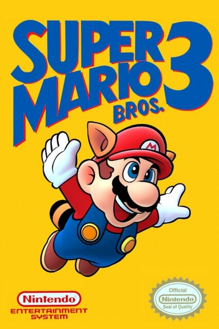
The Immortal
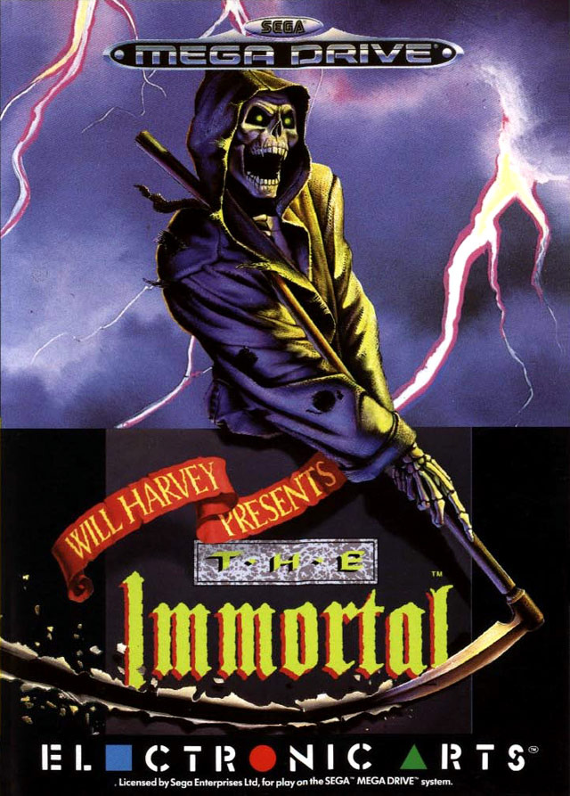
Top Gear
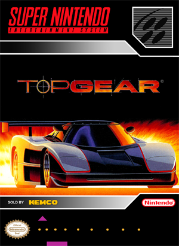
Global Gladiators
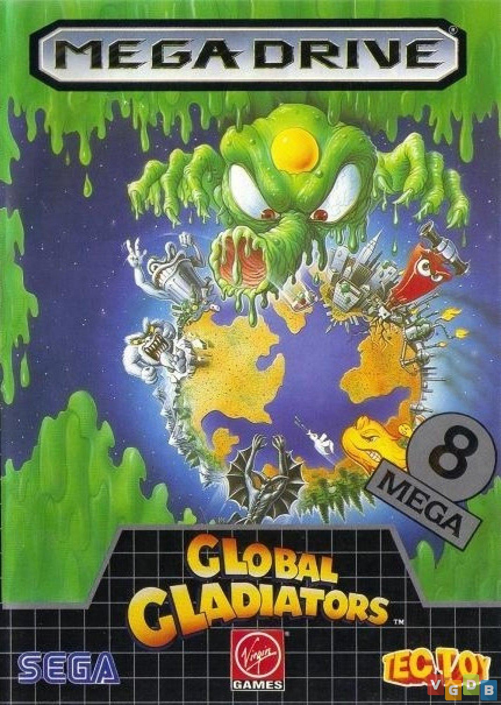
Streets of Rage 2
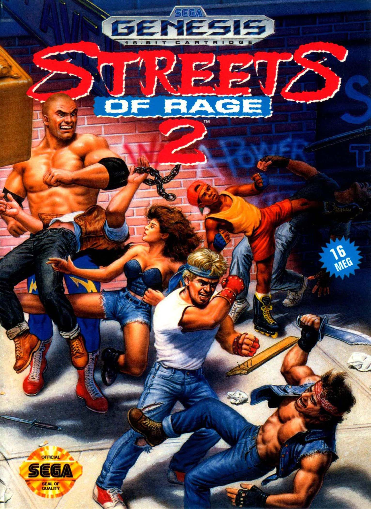
Greendog
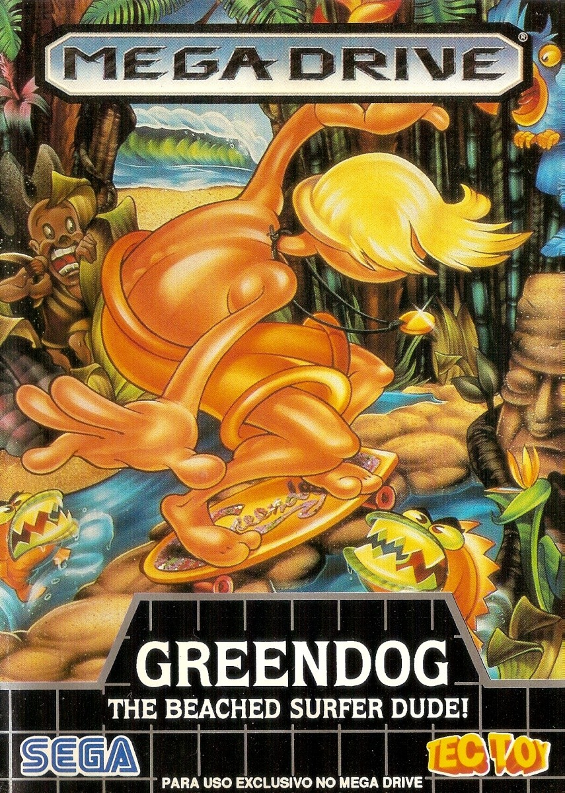
Sonic 2
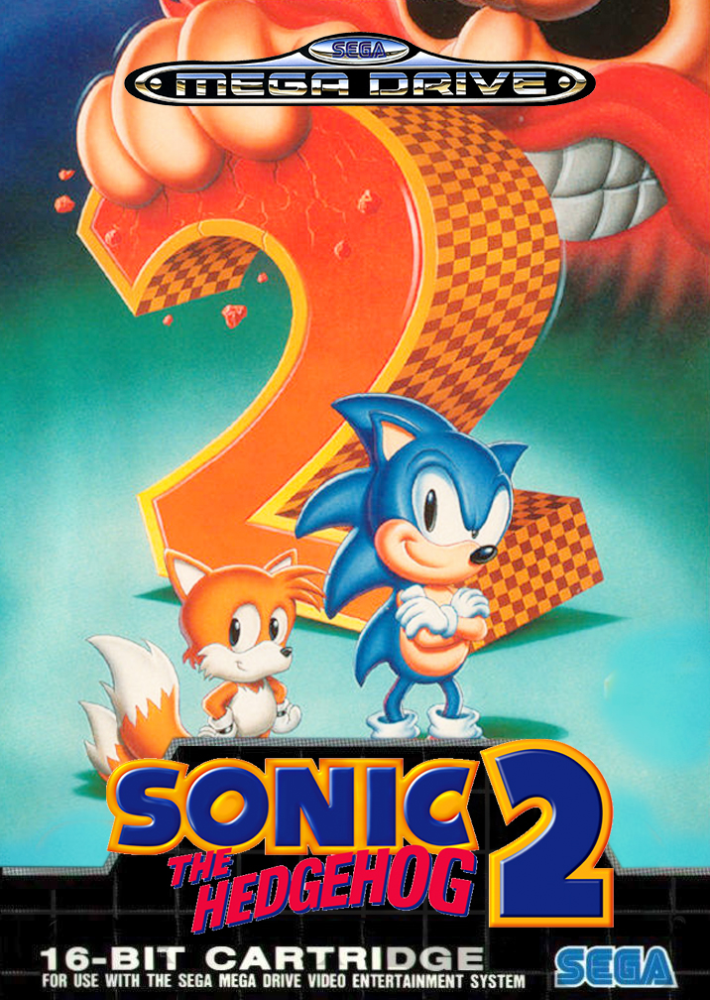
Splatter House 3
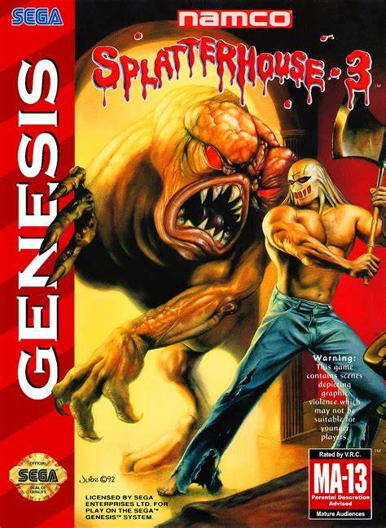
Kid Chameleon
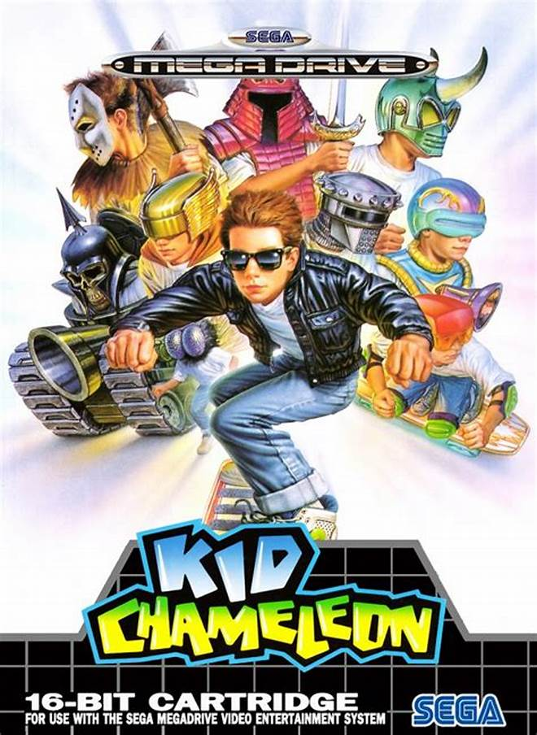
Super Metroid
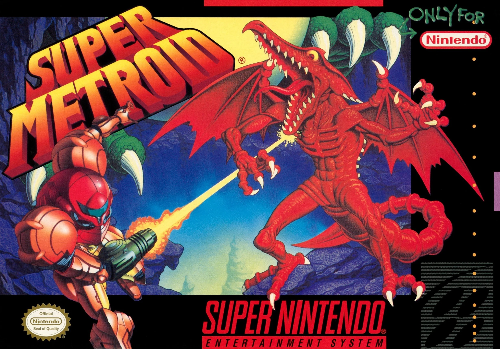
Ghoulsn Ghosts
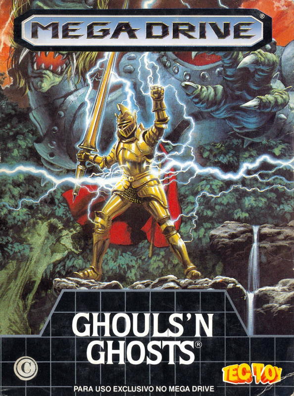
Aladdin
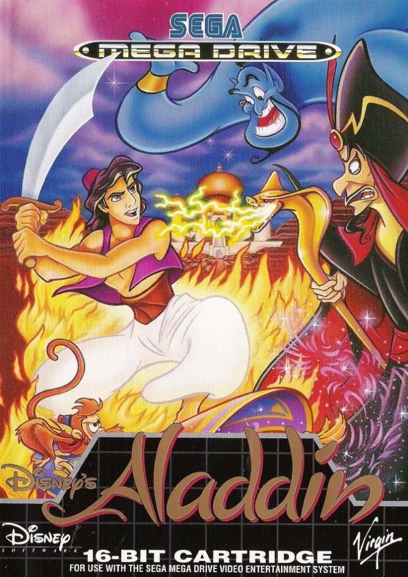
Golden Axe
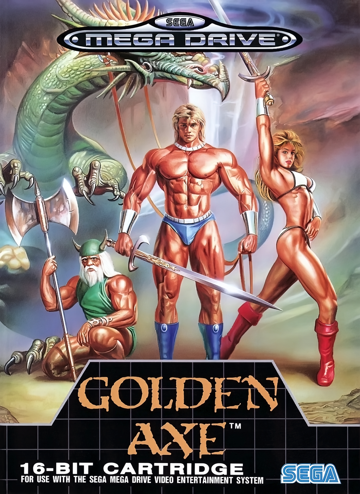
Ristar
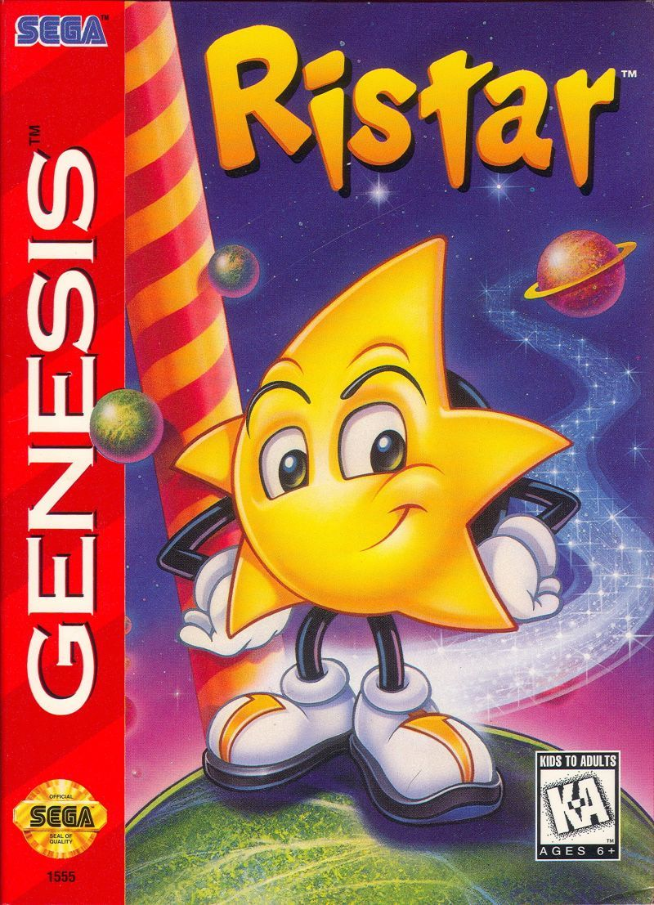
Vector Man 2
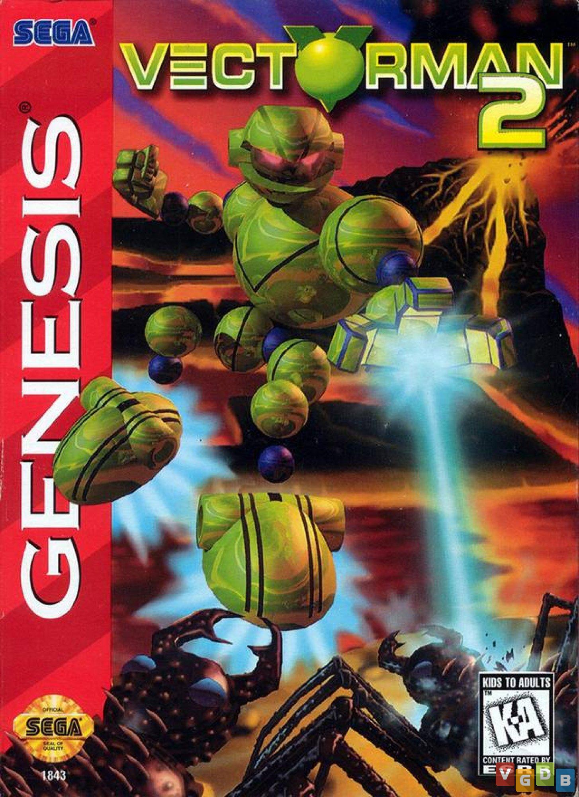
Alex Kidd
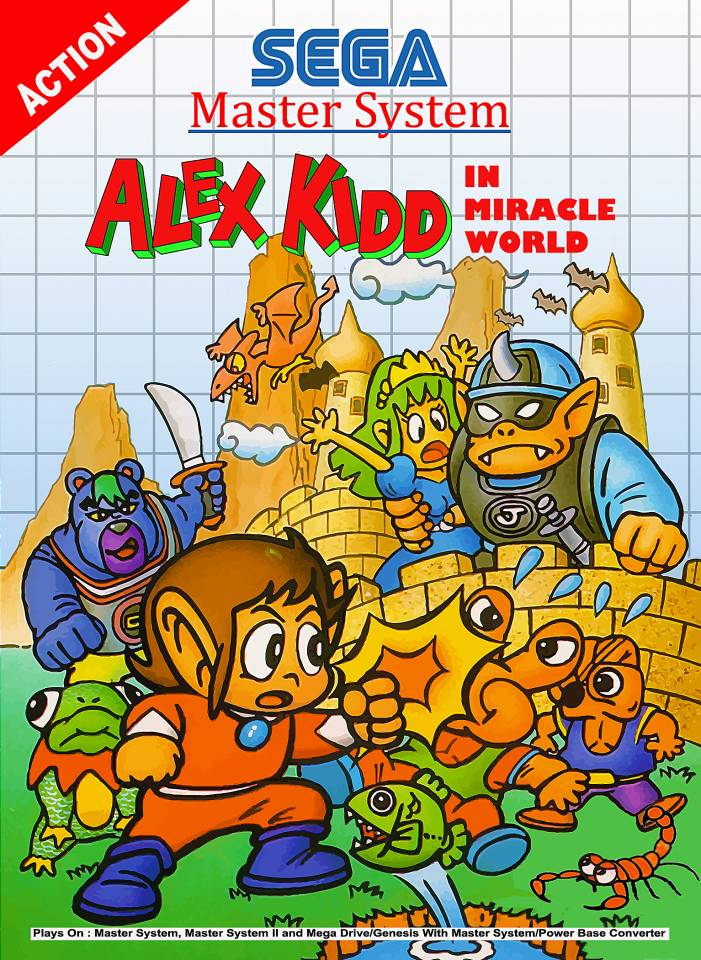
Contra Hard Corps

Chakan
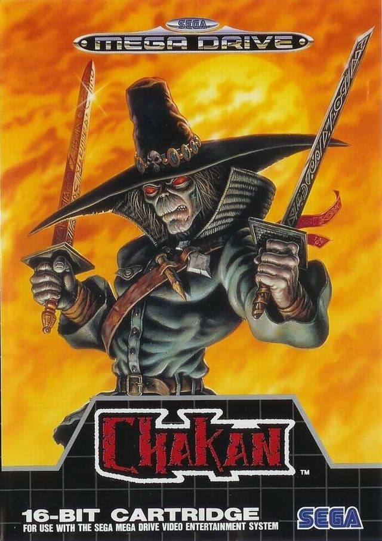
Hauting
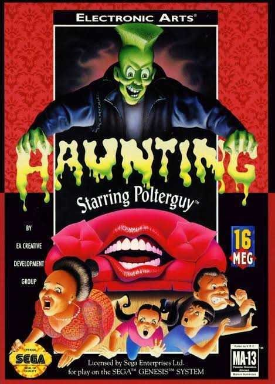
RockN Roll Racing

Rei Leão

Mega Man X